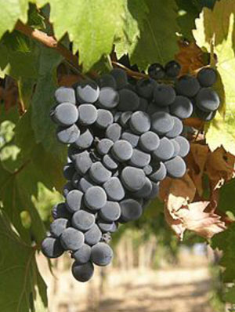
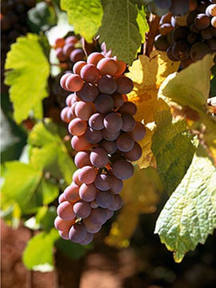

Самые распространенные сорта
Монтепульчано (Montepulciano)- красный винный сорт винограда, широко выращиваемый в центральной Италии, особенно в восточном Абруццо, регионах Марке и Молизе. Сорт назван в честь тосканского прихода Монтепульчано, но он не используется в известных винах, произведенных там (Vino Nobile di Montepulciano).
Пино гриджо (Pinot grigio) – сорт белого винограда из Франции (Бургундия), но лучшие вина из пино гриджо производят в Италии, именно здесь в северной части страны он нашел идеальные климатические условия.

Санджовезе (Sangiovese)- переводе с итальянского sangiovese означает «кровь Юпитера», и лоза унаследовала от своего тезки, помимо имени, его переменчивый нрав. По размаху мутаций Санджовезе напоминает Пино Нуар. Разнообразие переходов от мелкоплодного Санджовезе Пикколо (Sangiovese Piccolo), или Санджовето (Sangioveto), к Санджовезе Гроссо (Sangiovese Grosso) с его крупными ягодами свидетельствует о генетической подвижности и размытости и заставляет отказаться от четкой внутривидовой классификации в пользу простой констатации внешних проявлений и свойств.
| Страна | Год 2014 | Год 2015 | Год 2016 | Год 2017 |
|---|---|---|---|---|
| Италия | Хороший | Средний | Плохой | Хороший |
| Франция | Хороший | Средний | Плохой | Хороший |
| Чили | Хороший | Средний | Плохой | Хороший |
| Россия | Хороший | Средний | Плохой | Хороший |